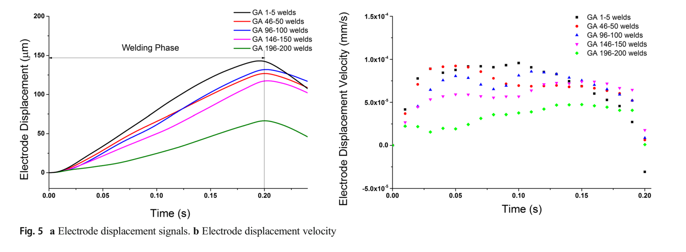

Journal article
Qualitative and quantitative analysis of misaligned electrode degradation when welding galvannealed steel
Research at a glance
{kind=link}

Abstract
Electrode misalignment, induced from the flexibility of welding machine gun of spot welder or the potential poor fit-up, leads to the high tendency of expulsion and asymmetric nugget shape. Yet very few studies have focused on the influence of misalignment on the electrode degradation and microstructure evolution of the electrode, especially when welding galvannealed steel. This paper investigates the degradation of such misaligned electrodes when spot welding galvannealed steel. To reveal its mechanism, the electrodes welded with galvannealed steel were examined after 10 and 200 welds with the slight misalignment. The electrodes were found to experience more severe degradation compared to the results from previous studies with the aligned electrodes. The results from energy-dispersive spectrum (EDS) analysis further confirmed that δ-Fe–Zn phase, a barrier from galvannealed coating for isolating Cu and Zn formation, was not uniformly distributed on the electrode tip. As a result, the initial electrode pitting took place after 50 welds. Furthermore, electron backscatter diffraction (EBSD) quantitatively analyzed the recrystallized grains of the worn electrodes, which underwent rotation under the asymmetric pressure distribution under misalignment. The calculated Taylor factor via EBSD mapping also indicated the declined portion of <111> grains accounted for the low deformation resistance of the worn electrode. Finally, electrode displacements were simultaneously collected in the experiments, of which the peak values accurately predicted the heat generation for each spot weld and accordingly predicted the electrode life.
Keywords
Recommended citation
Bobin Xing, Shaohua Yan, Haiyang Zhou, Hua Chen, and Qing H. Qin (2018). Qualitative and quantitative analysis of misaligned electrode degradation when welding galvannealed steel. The International Journal of Advanced Manufacturing Technology, 97(1-4), 629–640. https://doi.org/10.1007/s00170-018-1958-1